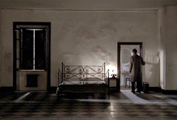
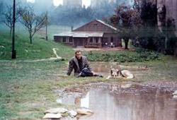
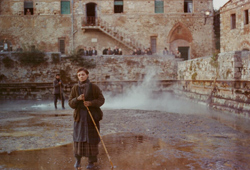
Nostalgia is a 1983 Soviet-Italian drama film directed by Andrei Tarkovsky and starring Oleg Yankovsky, Domiziana Giordano, and Erland Josephson. Tarkovsky co-wrote the screenplay with Tonino Guerra.
The film depicts a Russian writer (Oleg Yankovsky) who visits Italy to carry out research about an 18th-century Russian composer, but is stricken by homesickness. The film utilises autobiographical elements drawn from Tarkovsky's own experiences visiting Italy, and explores themes surrounding nostalgia and the untranslatability of art and culture.
The film won the Prize of the Ecumenical Jury, the prize for Best Director and the FIPRESCI Prize at the 1983 Cannes Film Festival. It received generally positive reviews from critics.
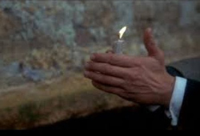
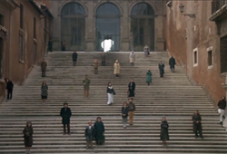
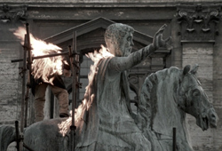
This was Tarkovsky's first film directed outside of the USSR. It was to be filmed in Italy with the support of Mosfilm, with most of the dialogue in Italian. The film was in pre-production as far back as 1980. Initially the film was titled Viaggio in Italia (Voyage to Italy), but since the film Journey to Italy (1954) by Roberto Rossellini, starring Ingrid Bergman, already bore that name, it was changed to Nostalgia.
When Mosfilm support was withdrawn, Tarkovsky used part of the budget provided by Italian State Television and French film company Gaumont to complete the film in Italy and cut some Russian scenes from the script, while recreating Russian locations for other scenes in Italy. Several scenes of the film were set in the countryside of Tuscany and northern Lazio; as the Abbey of San Galgano, the spas of Bagno Vignoni, the Orcia Valley, in the Province of Siena, the mysterious crypt of the Chiesa di San Pietro (Tuscania) and the flooded Church of Santa Maria in San Vittorino of Cittaducale, in the Province of Rieti.
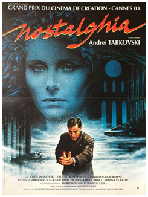
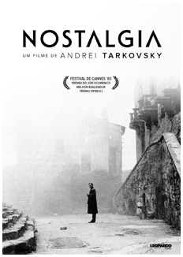
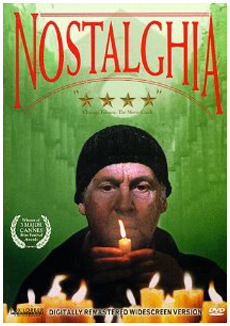
Anatoly Solonitsyn was initially cast as Andrei Gorchakov, but died from cancer in 1982, forcing Tarkovsky to seek a new protagonist, eventually deciding upon Oleg Yankovsky who had appeared in his previous film Mirror.
Similarly to Tarkovsky's previous films, Nostalgia features long takes, dream sequences and minimal story. Of his use of dream sequences, Tarkovsky said “We spend a third of our life asleep (and thus dreaming): what is there that is more real than dreams?” Tarkovsky also spoke of the profound form of nostalgia which he believed was unique to Russians when traveling abroad, comparing it to a disease, "an illness that drains away the strength of the soul, the capacity to work, the pleasure of living, but also, a profound compassion that binds us not so much with our own privation, our longing, our separation, but rather with the suffering of others, a passionate empathy."
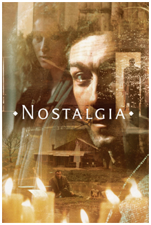
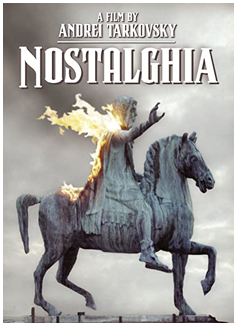
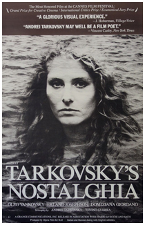
Tarkovsky's goal in Nostalgia, in terms of style, was to portray the soul, the memory, of Italy, of which it felt to him being there. When he visited Italy to begin preparation he visited cities where he would see Renaissance architecture, art and monuments, which he admired, but what struck him the most was the sky, the blue sky, black sky, with clouds, with the sun, at dawn, at noon, in the evening. "A sky", he said, "is always simply just that, but a change in the hour of the day, the wind, climate, can have it speak to you in a different way, with love, violence, longing, fear, etc."
The film features music by Ludwig van Beethoven and Giuseppe Verdi (Requiem), as well as Russian folk songs. Beethoven's Ninth Symphony is featured both during Andrei's visit at Domenico's home and during his demonstration in Rome.
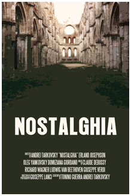
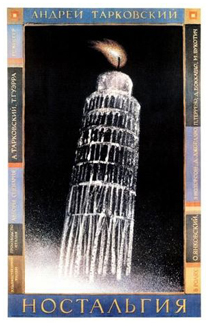
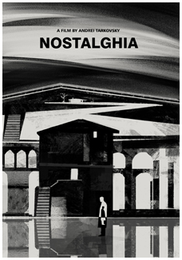